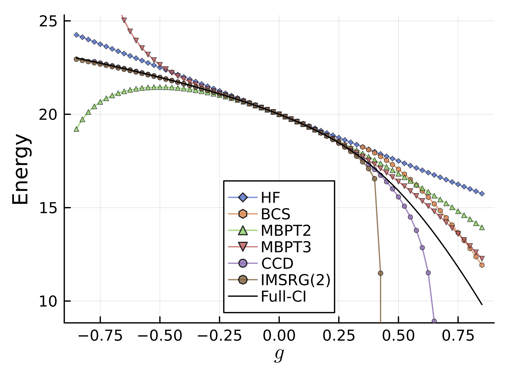

4. BCS (Bardeen-Cooper-Schrieffer)
この章では、対相関を効率的に取り込む基底の探索という観点から、BCS波動関数を説明する。
平均場計算等に馴染みのある読者には、より一般的な相互作用する系に対するHartree-Fock-Bogoliubov理論の発展の最も基本的な例として理解できる。
また、pairing Hamiltonianの性質を深く理解したり、他の計算手法による結果の解釈にも役立つ。
Hartree-Fockの章では、系のエネルギーを(単一スレーターという平均場近似のもとで)最小化する基底を探索することで、
系の基底状態を求める方法を説明した。この考え方を少し拡張し、核子間の対相関を取り込むための基底変換を導入する。
4.1. BCS ground state
やや天下り式だが、偶数個の同種核子系について以下のような波動関数を考える。
(4.1)\[\begin{split}
\begin{align*}
\ket{\mathrm{BCS}} & = \prod_{k>0} (u_a + v_a A_\alpha^\dagger) \ket{0} \\
A^\dagger_\alpha & = c^\dagger_{\alpha} \tilde{c}^\dagger_{\alpha} \\
\tilde{c}_{k}^\dagger &= (-1)^{j_k-m_k} c^{\dagger}_{-k}
\end{align*}
\end{split}\]
ここでイタリック体の添字は\(\{n,l,j\}\)のラベル,ギリシャ文字の添字は\(\{n,l,j,m\}\)のラベルであり、
\(k>0\)を用いて、当該軌道の\(m_k>0\)を表現し、負号がついたものは\(m\)を反転したものを表す。
電子軌道の場合はアップスピンのみに添え字を割り当てて、ダウンスピンはその反転として扱うのと同様である。
容易に想像できるように、上の波動関数は一般に全粒子数を良い量子数として持たない。
BCS波動関数は、粒子対の相関を効率的に取り込むような基底の探索とも解釈できる。
以下では粒子数保存などの条件を課しながら\(u, v\)を変分的に決定することを考える訳だが、
その前に、もう少しgeneralな導入として、まずBCS状態が規格化されていることを要請する。
すると、以下のような関係が得られる。
\[
| u_a |^2 + | v_a |^2 = 1
\]
以下では簡便さのため、\(u_a,v_a\)を実数として扱うこととする。
\[
u^2_a + v^2_a = 1
\]
そうすれば、\(u_a = \cos \theta, v_a = \sin \theta\)とも書ける。
4.2. 準粒子とBogoilubov変換
続いて粒子の概念を拡張した準粒子の生成・消滅演算子\(a^\dagger_\alpha, a_\alpha\)を導入する。
(4.2)\[\begin{split}
\begin{align}
a^\dagger_\alpha &= u_a c^\dagger_\alpha - v_a \tilde{c}_{\alpha}, \\
\tilde{a}_\alpha &= u_a \tilde{c}_{\alpha} + v_a c^\dagger_\alpha
\end{align}
\end{split}\]
または
\[\begin{split}
\begin{align*}
c^\dagger_\alpha &= u_a a^\dagger_\alpha + v_a \tilde{a}_\alpha, \\
\tilde{c}_\alpha & = u_a \tilde{a}_\alpha - v_a a^\dagger_\alpha, \\
c_\alpha &= u_a a_\alpha + v_a \tilde{a}^\dagger_\alpha, \\
\tilde{c}^\dagger_\alpha & = u_a \tilde{a}^\dagger_\alpha - v_a a_\alpha \\
\end{align*}
\end{split}\]
と定義する。上の変換をBogoliubov変換と呼ぶ。
\(c^\dagger_\alpha, c_\alpha\)は通常の生成・消滅演算子であり、これらの反交換関係と規格化条件を用いて、\(a^\dagger_\alpha, a_\alpha\)の反交換関係を導出することができる。
(4.3)\[
\begin{align}
\{ a^\dagger_\alpha, a_\beta \}
= \delta_{\alpha \beta}, \{ a_\alpha, a_\beta \}
= \{ a^\dagger_\alpha, a^\dagger_\beta \} = 0
\end{align}
\]
なお、\(u_a=1, v_a=0\)の場合、\(a^\dagger_\alpha = c^\dagger_\alpha, a_\alpha = c_\alpha\)となる。
したがって、BCS状態は通常の粒子の真空状態(あるいはバレンスであればHFなどのreference状態)となる。
上で定義したBCS状態は、準粒子の真空状態である。すなわち、以下のような関係が成り立つ。
(4.4)\[
a_\alpha \ket{\mathrm{BCS}} = \tilde{a}_\alpha \ket{\mathrm{BCS}} = 0
\]
Bogoilubov変換の意味を理解するために、通常の粒子の数演算子についてBCS状態で期待値を取ってみよう。
\[
c^\dagger_\alpha c_\alpha
= (u_a a^\dagger_\alpha + v_a \tilde{a}_\alpha)(u_a a_\alpha + v_a \tilde{a}^\dagger_\alpha)
= u_a^2 a^\dagger_\alpha a_\alpha + v_a^2 \tilde{a}_\alpha \tilde{a}^\dagger_\alpha
\]
より
(4.5)\[
\bra{\mathrm{BCS}} c^\dagger_\alpha c_\alpha \ket{\mathrm{BCS}} = v_a^2
\]
となる。\(v_a^2\)は、BCS状態において、軌道\(a\)の占有数(を縮重度で割ったもの)に対応している。
軌道\(a\)の占有確率ともいえる。(ただし、pairing Hamiltonianの場合はペアの占有確率, 殻模型の場合は\(jj\)-coupling軌道の占有確率となる。)
全粒子数保存の条件は、以下のように書ける。
conventionに関する注
チルダ付きの演算子は、２つの演算子を組み合わせて既約テンソル演算子を作るために導入される。
因子についてはClebsch-Gordan係数で、\((-1)^{j-m}\)の部分もその特殊な場合に相当する。
今考えているpairing Hamiltonianでは、\(j=1/2\), \(m=\pm 1/2\)であり、
軌道ごとに符号のファクターが異なるということはなく、チルダなしの演算子を用いても問題ないが、
より一般の場合には、どのconventionのもとで計算を行っているかを明示することが重要である。
例えば、\((-1)^{j-m}\)の部分が、J.Suhonenのテキストでは、\((-1)^{j+m}\)となっており、
それに伴ってBogoliubov変換の定義につく符号もこの資料とは異なる。
4.3. 準粒子基底でのHamiltonian
次に、系のハミルトニアンを準粒子基底で表現すると以下のようになる:
\[
\begin{align}
H & = H_0 + H_{11} + H_{20} + H_4
\end{align}
\]
ここで、\(H_0, H_{11}, H_{20}, H_4\)はそれぞれ、準粒子の励起・脱励起演算子を何次で含むかによって分類されている。
BCS状態(準粒子の真空状態)を考えるので、\(H_0\)の具体的な表式だけここでは求めれば良い。
さて、上のような整理や具体的な導出は多数の本や論文と同様 詳細はRing-Schuckに譲る などとしても良いが、
私のように「チッまたかよ」と思った方もいるかもしれないので、少なくとも\(H_0\)については具体的な表式を導出しておこう
(ちなみに、Ring-Schuckの本には詳細な導出は載っていない)。
導出するうえで重要な要素は、以下のようなものになる。
元の生成・消滅演算子の対をBCS状態に対してcontractionを取ったもの
元のハミルトニアンの２体項\(c^\dagger_\alpha c^\dagger_\beta c_\delta c_\gamma\)に対するBCS状態での期待値 (Wickの定理を用いる)
まず、1.について考える。
上で見たように、Bogoliubov変換で得た演算子は、BCS状態に対してcontractionを取ると、非対角成分が消える。
なお、markdownで書いている都合上、縮約は上付きの線ではなくブラケットで表現することにした。
\[
\begin{align}
\langle a_\alpha a^\dagger_\beta \rangle
\equiv \langle \mathrm{BCS}| a_\alpha a^\dagger_\beta | \mathrm{BCS} \rangle = \delta_{\alpha \beta} ,
\quad (\text{other} \ \text{contractions}) = 0
\end{align}
\]
次に、\(c, c^\dagger\)の対について縮約を計算しておくと、以下のようになる:
\[\begin{split}
\begin{align}
\langle c_\alpha c^\dagger_\beta \rangle & = u^2_a \delta_{\alpha \beta}, \\
\langle c^\dagger_\alpha c_\beta \rangle & = v_a v_b \langle \tilde{a}_\alpha \tilde{a}^\dagger_\beta \rangle = v^2_a \delta_{\alpha \beta}, \\
\langle c^\dagger_\alpha c^\dagger_\beta \rangle & = v_a u_b \langle \tilde{a}_\alpha a^\dagger_\beta \rangle = u_a v_a (-1)^{j_a - m_\alpha} \delta_{\alpha -\beta}, \\
\langle c_\alpha c_\beta \rangle & = u_a v_b \langle a_\alpha \tilde{a}^\dagger_\beta \rangle = u_a v_a (-1)^{j_a + m_\alpha} \delta_{\alpha -\beta}
\end{align}
\end{split}\]
続いて、2.について考えよう。
できるだけ一般的な表現となるよう、調和振動子の量子数\(\{n,l,j,m\}\)を持つラベルで２体相互作用が
\(V_{\alpha \beta \gamma \delta} c^\dagger_\alpha c^\dagger_\beta c_\delta c_\gamma\)の形で書かれているとする。
この項に対するBCS状態での期待値は、正規順序積を表す\(\mathcal{N}\)とWickの定理を用いて以下のように計算することができる。
\[\begin{split}
\begin{align}
4V =
\sum_{\alpha \beta \gamma \delta} V_{\alpha \beta \gamma \delta} c^\dagger_\alpha c^\dagger_\beta c_\delta c_\gamma
= &\sum_{\alpha \beta \gamma \delta} V_{\alpha \beta \gamma \delta}
\mathcal{N} [ c^\dagger_\alpha c^\dagger_\beta c_\delta c_\gamma ]
+ \sum_{\alpha \beta \gamma \delta} V_{\alpha \beta \gamma \delta} \langle c^\dagger_\alpha c^\dagger_\beta \rangle \mathcal{N}[ c_\delta c_\gamma ]
- \sum_{\alpha \beta \gamma \delta} V_{\alpha \beta \gamma \delta} \langle c^\dagger_\alpha c_\gamma \rangle \mathcal{N}[ c^\dagger_\beta c_\delta ] \\
&
+ \sum_{\alpha \beta \gamma \delta} V_{\alpha \beta \gamma \delta} \langle c^\dagger_\alpha c_\delta \rangle \mathcal{N}[ c^\dagger_\beta c_\gamma ]
- \sum_{\alpha \beta \gamma \delta} V_{\alpha \beta \gamma \delta} \langle c^\dagger_\beta c_\delta \rangle \mathcal{N}[ c^\dagger_\alpha c_\gamma ] \\
&
+ \sum_{\alpha \beta \gamma \delta} V_{\alpha \beta \gamma \delta} \langle c^\dagger_\beta c_\gamma \rangle \mathcal{N}[ c^\dagger_\alpha c_\delta ]
+ \sum_{\alpha \beta \gamma \delta} V_{\alpha \beta \gamma \delta} \langle c_\gamma c_\delta \rangle \mathcal{N}[ c^\dagger_\alpha c^\dagger_\beta ]
\\
&
+ \sum_{\alpha \beta \gamma \delta} V_{\alpha \beta \gamma \delta} \langle c^\dagger_\alpha c^\dagger_\beta \rangle \langle c_\delta c_\gamma \rangle
- \sum_{\alpha \beta \gamma \delta} V_{\alpha \beta \gamma \delta} \langle c^\dagger_\alpha c_\gamma \rangle \langle c^\dagger_\beta c_\delta \rangle
+ \sum_{\alpha \beta \gamma \delta} V_{\alpha \beta \gamma \delta} \langle c^\dagger_\alpha c_\delta \rangle \langle c^\dagger_\beta c_\gamma \rangle
\end{align}
\end{split}\]
上で計算しておいた縮約を用いて、各項を計算すると、以下のようになる:
\[\begin{split}
\begin{align}
\sum_{\alpha \beta \gamma \delta} V_{\alpha \beta \gamma \delta} c^\dagger_\alpha c^\dagger_\beta c_\delta c_\gamma
=
&
\sum_{\alpha \beta } V_{\alpha -\alpha \beta -\beta} u_a v_a u_b v_b (-1)^{j_a - m_\alpha} (-1)^{j_b - m_\beta}
+ 2\sum_{\alpha \beta } V_{\alpha \beta \alpha \beta} v^2_a v^2_b \\
& + \{ a^\dagger a \ \text{terms} \} + \{ a^\dagger a^\dagger \& aa \ \text{terms} \} \\
& + \sum_{\alpha \beta \gamma \delta} V_{\alpha \beta \gamma \delta}
\mathcal{N} [ c^\dagger_\alpha c^\dagger_\beta c_\delta c_\gamma ]
\end{align}
\end{split}\]
準粒子の励起・脱励起演算子が残る項については具体的な計算を省略したが、上のように計算することができる。
特に重要な２例について、\(H_0\)部分を具体的に計算しておこう。
4.3.1. globalなpairing Hamiltonianの場合
まずは、この講義資料を通して考えている、pairing Hamiltonianの場合を考える。
同一軌道の場合にしか相互作用がないことから、和が整理できて、以下のようになる:
\[\begin{split}
\begin{align}
4V = \sum_{\alpha \beta } V_{\alpha -\alpha \beta -\beta} u_a v_a u_b v_b (-1)^{j_a - m_\alpha} (-1)^{j_b - m_\beta}
& \to - g \left(\sum_{\alpha} u_a v_a \right)^2 \\
2 \sum_{\alpha \beta } V_{\alpha \beta \alpha \beta} v^2_a v^2_b
& \to - 2 g \sum_{\alpha} v^4_a
\end{align}
\end{split}\]
したがって、系のHamiltonianの\(H_0\)部分はOne-bodyの項と合わせて以下のようになる:
\[
\begin{align}
H_0 & = \sum_{\alpha} \left( \epsilon_a v^2_a - \frac{g}{2} v^4_a \right) - \frac{g}{4} \left(\sum_{\alpha} u_a v_a \right)^2
\end{align}
\]
4.3.2. \(jj\)-couplingの二体行列要素の場合
より一般的な場合として、\(jj\)-couplingのharmonic oscillator basisでの二体行列要素を考える。
\[\begin{split}
\begin{align}
\sum_{\alpha \beta } V_{\alpha -\alpha \beta -\beta} u_a v_a u_b v_b (-1)^{j_a - m_\alpha} (-1)^{j_b - m_\beta}
& \to 2 \sum_{ab} \hat{j}_a \hat{j}_b u_a v_a u_b v_b \langle a a| V| b b \rangle_{J=0} \\
2 \sum_{\alpha \beta } V_{\alpha \beta \alpha \beta} v^2_a v^2_b
& \to 2 \sum_{ab} v^2_a v^2_b \sum_{J} (2J+1) \left[ \mathcal{N}(J) \right]^{-2} \langle a b| V| a b \rangle_{J} \\
\end{align}
\end{split}\]
4.4. gap方程式の導出
では、\(u_a, v_a\)を変分的に決定するために、エネルギーの期待値を最小化することを考える。
その際、全粒子数保存条件を満たすために、ラグランジュの未定乗数法を用いる。
\[
\hat{H}' \equiv \hat{H} - \lambda \hat{N}
\]
のもとで、変分原理を課す
\[
\delta E'_0 \equiv \delta \bra{\mathrm{BCS}} \hat{H}' \ket{\mathrm{BCS}} = 0
\]
ただし、各\(u_\alpha, v_\alpha\)は独立ではなく、二乗和が1であるという制約を持っている。
したがって、変分する際の表式を具体的に書くと、以下のようになる。
(4.6)\[
\begin{align}
\left( \frac{\partial}{\partial v_a} + \frac{\partial u_a}{\partial v_a} \frac{\partial }{\partial u_a} \right)
E'_0 = 0
\end{align}
\]
ここで、\(E_0\)はBCS状態の\(H_0\)の期待値であるから、pairing Hamiltonianの場合は具体的には以下のように書ける:
まず\(\Delta\)を導入しておいて...
(4.7)\[
\begin{align}
\Delta \equiv & \frac{g}{2} \sum_{\alpha} u_a v_a
\end{align}
\]
\(\epsilon'_a \equiv \epsilon_a - g v^2_a \)とおいて、\(E_0\)を具体的に計算すると以下のようになる:
\[
\begin{align}
E_0 = \sum_{\alpha} \epsilon'_a v^2_a - \frac{\Delta^2}{g}
\end{align}
\]
変分をとると、以下のような方程式を得る:
\[
\begin{align}
0 = & (\epsilon_a - \lambda) v_a - g v^3_a - \frac{\Delta}{2} u_a + \frac{v^2_a}{2u_a} \Delta
\end{align}
\]
よって、
\[
\begin{align}
(\epsilon_a - gv^2_a -\lambda) u_a v_a = & \frac{\Delta}{2} (u^2_a - v^2_a)
\end{align}
\]
ここから
\[\begin{split}
\begin{align}
u^2_a & = \frac{1}{2} \left( 1 + \frac{\epsilon'_a - \lambda}{\sqrt{(\epsilon'_a - \lambda)^2 + \Delta^2}} \right) \\
v^2_a & = \frac{1}{2} \left( 1 - \frac{\epsilon'_a - \lambda}{\sqrt{(\epsilon'_a - \lambda)^2 + \Delta^2}} \right) \\
\end{align}
\end{split}\]
を得る。ここで(4.7)に結果を代入して整理すると、以下のギャップ方程式を得る:
\[
\begin{align}
\Delta = \frac{g}{4} \sum_{\alpha} \frac{\Delta}{\sqrt{(\epsilon'_a - \lambda)^2 + \Delta^2}}
\end{align}
\]
あとはこれと、全粒子数保存条件(4.5)を連立させて\(\lambda, \Delta\)を決定すれば良い。
せっかくなのでまとめて書いておこう。
\[\begin{split}
\begin{align}
N & = \sum_{\alpha} v^2_a = \sum_{\alpha} \frac{1}{2} \left( 1 - \frac{\epsilon'_a - \lambda}{\sqrt{(\epsilon'_a - \lambda)^2 + \Delta^2}} \right)\\
\Delta & = \frac{g}{4} \sum_{\alpha} \frac{\Delta}{\sqrt{(\epsilon'_a - \lambda)^2 + \Delta^2}}
\end{align}
\end{split}\]
ペアリングが弱く
\[
\begin{align}
\frac{g}{4} \sum_{\alpha} \frac{1}{\sqrt{(\epsilon'_a - \lambda)^2 + \Delta^2}} < 1
\end{align}
\]
となる場合は自明な解(\(\Delta = 0\))しか存在せず、HFからエネルギーを稼ぐ事もできない。
数値的に解く際には、非物理的なエネルギーを結果として用いないように、適宜上の条件をモニターすることも必要となる。
4.5. 数値計算
上で導出したギャップ方程式を解こう。
\(\Delta\)と\(\lambda\)はself-consistentに決定する必要があるため、上の表式を更新式として使う。
\[\begin{split}
\begin{align}
\Delta^\mathrm{new} := & \frac{g}{4} \sum_{\alpha} \frac{\Delta}{\sqrt{(\epsilon'_a - \lambda)^2 + \Delta^2}} \\
\lambda^\mathrm{new} := & \frac{g}{2} \left( N_\mathrm{occ.} - \frac{N_\mathrm{orb.}}{2} + \frac{1}{2} \sum_{\alpha} \frac{\epsilon'_a }{\sqrt{(\epsilon'_a - \lambda)^2 + \Delta^2}} \right)
\end{align}
\end{split}\]
\(\Delta, \lambda\)を更新したあと、\(u_a, v_a\)を再計算して、エネルギーを計算する。これを収束するまで繰り返す。
4.6. 結果の考察

pairing Hamiltonianは、ある\(g\)の値よりも大きい領域からある種の超流動的な性質を持ち、BCS的な描像がよく成り立つようになる。
4.7. あとがき:
HFB(Hartree-Fock-Bogoliubov)への拡張・応用
Hartree-Fock法とBogoliubov変換を組み合わせたHFB法は、原子核物理学において非常に重要な手法である。
現代的な核構造計算においてにも、HFBを活用した
HFB+GCM (generator coordinate method)
BMBPT (Bogoliubov many-body perturbation theory)
QVSM (Quasi-vacua shell model)
IMSRG + HFB/GCM
など多くの発展がある。平均場的な計算手法については、おそらくは読者(やその指導教員)の方が詳しいであろう。
より関連する既存コードとしては、Banjamin BallyらによるTAURIS_VAPコードなどがある。
ちなみに、N. Shimizu et al. PRC 103, 064302 (2021)によると、一般化されたBogoliubov変換を考える際に、
複素数を考えることで、実数に限って解いたBallyらに比べて、\(3^+_1\)状態など特定の状況でより良い結果が得られることなども示されている。
一般化されたBogoliubov変換 (generalized Bogoliubov transformation)の場合は、出発点として
複素成分を持つランダムユニタリ行列が必要となるが、その場合についてはQR分解を用いれば良い。
また、角運動量や粒子数・パリティ射影などにおいては、制約付きの最適化をどのように実装するかも重要となる。
筆者のこれまでの経験では、Juliaで構造計算のコードを書く場合は、C++やFortranなどの既存コードに比べて1/5や1/10程度のコード量で書けることも多い。
PairingHamiltonian.jlでは、HFBの導出やその応用については扱っていないが、読者の中で興味を持つ人がいればJuliaでの実装にチャレンジしてみてほしい(その際は一緒にやりましょう)。
Coupled-Cluster法への拡張・応用については、Coupled Clusterの章で触れることにする。